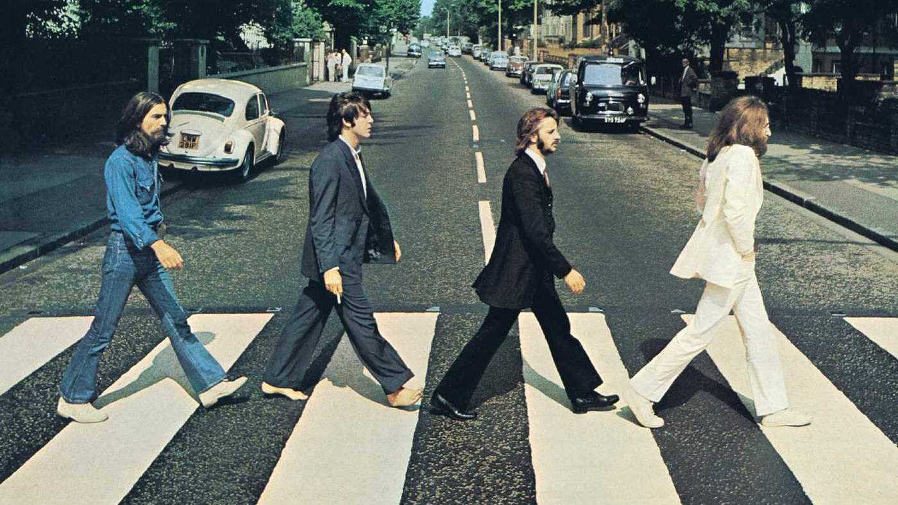

Áhrif Bítlana á samfélagið
Enska rokkhljómsveitin Bítlarnir eru almennt álitin fremsta og áhrifamesta hljómsveit dægurtónlistarsögunnar. Hljómsveitin samanstóð af John Lennon, Paul McCartney, George Harrison og Ringo Starr. Árið 1963 kveiktu þeir á "Beatlemania" fyrirbærinu og náðu heimsfrægð árið 1964. Bítlarnir höfðu mikil áhrif á dægurlagatónlist, æsku þjóðarinnar og breska sjálfsmynd, þeir þróuðu dægurtónlist í áður óþekkt listform. Vinsældir þeirra voru af áður óþekkri stærðagráðu.
Margar menningarhreyfingar á sjöunda áratugnum innblástur frá Bítlunum. Í Bretlandi var uppgangur þeirra merki um ungmennadrifnar breytingar í samfélaginu eftir stríð, með tilliti til félagslegs hreyfanleika, viðskiptaáhrifa unglinga og óformleika. Þeir voru í fararbroddi breytinga frá heimsyfirráðum bandarískra listamanna á rokki og ról til breskra leikara (þekkt í Bandaríkjunum sem breska innrásin) og veittu mörgu ungu fólki innblástur til að stunda tónlistarferil. Frá 1964 til 1970 átti hópurinn söluhæstu bandarísku smáskífu eina af hverjum sex vikum og söluhæstu bandarísku plötuna eina af hverjum þriggja vikna. Árið 1965 fengu þeir MBEs, í fyrsta skipti sem slíkur heiður var veittur breskum poppleik. Ári síðar sagði Lennon með umdeildum orðum að hljómsveitin væri „vinsælli en Jesús núna“.Bítlarnir tóku oft upp klassíska þætti, hefðbundin poppform og óhefðbundna upptökutækni á nýstárlegan hátt, sérstaklega með plötunum Rubber Soul (1965), Revolver (1966) og Sgt. Pepper's Lonely Hearts Club Band (1967). Margar framfarir þeirra í framleiðslu, skrifum og listrænni framsetningu voru fljótlega útbreiddar. Aðrar menningarbreytingar sem hópurinn hafði frumkvæði að fela í sér hækkun plötunnar til að verða ríkjandi tegund plötuneyslu fram yfir smáskífur, víðtækari áhugi á geðlyfjum og austrænum anda og nokkrum tískustraumum. Hljómsveitin var einnig brautryðjandi með plötusnúðum sínum og tónlistarmyndböndum, auk upplýstra tónlistarstíla eins og jangle, þjóðlagarokk, kraftpopp, psychedelia, framsækið rokk og þungarokk. Í lok áratugarins var litið á hópinn sem holdgervingu félagsmenningarhreyfinga tímabilsins, sem dæmi um viðhorf lagsins „All You Need Is Love“ frá 1967.
Á sjöunda áratugnum í heild voru Bítlarnir ríkjandi popplag sem miðast við unglinga á sölulistanum. Þeir slógu fjölmörg sölu- og aðsóknarmet, sem mörg hver hafa eða höfðu haldið í áratugi, og halda áfram að njóta kanónískrar stöðu sem er áður óþekkt fyrir vinsæla tónlistarmenn. Lögin þeirra eru meðal þeirra mest hljóðrituðu í sögunni, með cover útgáfur af "Yesterday" yfir þúsundum. Frá og með 2009 voru þeir mest selda hljómsveit sögunnar, með áætlaða sölu á yfir 600 milljón hljómplötum um allan heim.